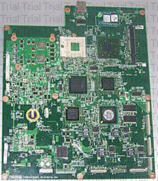

Introduction

هندسة الحاسوبهي فرع من الهندسة، حيثُ تجمع بين مجالاتٍ متعددة من علم الحاسوب وهندسة الإلكترونيات المطلوبة لتطوير أجهزة وبرمجيات الحاسوب.عادةً ما يكون لدى مهندسي الحاسب تدريبٌ في هندسة الإلكترونيات (أو هندسة الكهربائيات) وتصميم البرمجيات وتكامل البرمجيات والأجهزة، بدلًا من هندسة البرمجيات أو الهندسة الكهربائية فقط. يُشارك مهندسو الحاسب في العديد من جوانب الأجهزة والبرمجيات في مجال الحوسبة، بدءً من تصميم وحدات التحكم الدقيقة الفردية والمعالجات الدقيقة والحواسيب الشخصية والحواسيب الفائقة إلى تصميم الدوائر الكهربائية. هذا المجال من الهندسة لا يركز فقط على كيفية عمل أنظمة الحاسب نَفسها، ولكن أيضًا كيفية دمجها والتعامل معها بشكلٍ أوسع.
تشمل المهام المُعتادة لمهندسي الحاسب كتابة البرمجيات والبرامج الثابتة للمتحكمات الدقيقة المضمنة، وتصميم شرائح دارات التكامل الفائقة، وتصميم أجهزة الاستشعار التناظرية، وتصميم لوحات الدوائر المطبوعة مختلطة الإشارات، وتصميم أنظمة التشغيل. كما أن مهندسي الحاسب يتلائمون أيضًا مع أبحاث الروبوتات، التي تعتمد بشكلٍ كبير على استخدام الأنظمة الرقمية للتحكم في الأنظمة الكهربائية ومراقبتها مثل المحركات والاتصالات وأجهزة الاستشعار.
في العديد من المؤسسات، يُسمح لطلاب هندسة الحاسب باختيار مجالات الدراسة المُتعمقة في سنتهم الأولى والعليا؛ وذلك لأن نطاق المعرفة الكامل المُستخدم في تصميم وتطبيق أجهزة الحاسب يتجاوز نطاق درجة البكالوريوس. قد تطلب مؤسساتٌ أخرى من طلاب الهندسة إكمال سنة واحدة أو سنتين من الهندسة العامة قبل اعتبار هندسة الحاسب التخصص الأساسي لهم